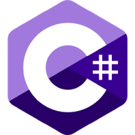

C# (C Sharp)
C# é uma linguagem de programação, multiparadigma, de tipagem forte, desenvolvida pela Microsoft como parte da plataforma .NET. Página Oficial.
Vantagens
- Sistema de tipos unificado
- Tipagem forte
- Async/Await disponível
Desvantagens
- Pouco suporte fora do Windows
- Pouco controle de desempenho
- Compilação com overhead
Usada em
- AWS
- Blender
- MongoDB
- Paint.net
- Unity
- VS Code
CSS
CSS (Cascading Style Sheets) é um mecanismo para adicionar estilos a uma aplicação web ao personalizar os elementos de marcação. Página Oficial.
Vantagens
- Design web responsivo
- Modularização e reutilização
- Separação da marcação
Desvantagens
- Inconsistência em navegadores
- Limitações no layout
- Impacto no desempenho
Usada em
- Bootstrap
- Shopify
- YouTube
HTML
HTML5 (Hypertext Markup Language) é uma linguagem de marcação para a web e é uma tecnologia chave da Internet. A versão mais recente é a quinta versão, chamada HTML5. Página Oficial.
Vantagens
- Alto suporte para multimídia
- Marcação semântica
- Aplicações web offline
Desvantagens
- Vulnerabilidades de segurança
- Fragmentação de padrões
- Acessibilidade desafiadora
Usada em
- Canva
- Dropbox
- Medium
- Slack
- Trello
- Zoom
Javascript
JavaScript é uma linguagem de programação interpretada estruturada, de script em alto nível com tipagem dinâmica fraca e multiparadigma. Muito popular em aplicações para a web. Página Oficial.
Vantagens
- Execução no lado do cliente
- Alta interoperabilidade
- Suporta programação funcional
Desvantagens
- Interpretação variável
- Recursos limitados para depurar
- Sem herança múltipla
Usada em
- Amazon
- Discord
- Duolingo
- Netflix
Swift
Swift é uma linguagem de programação compilada de alto nível, de uso geral e multiparadigma, desenvolvida pela Apple Inc. visando desenvolvimento para dispositivos Apple. Página Oficial.
Vantagens
- Prevenção de null pointer
- Código aberto
- Potencial para uso em full stack
Desvantagens
- Suporte precário fora do macOS
- Pouco suporte em IDEs
- Sem suporte para iOS antigos
Usada em
- Asana
- Firefox
- Wikipedia
- Wordpress